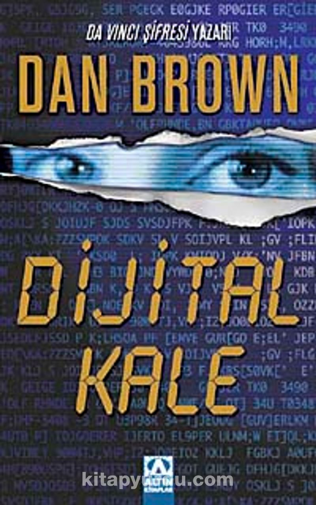

Bunlardan bir kaçı ve özetleri şunlardır:
Melekler Ve Şeytanlar:

Bu romanda Illuminati isimli eski bir kardeşlik örgütü ile Katolik Kilisesi arasında geçen heyecan dolu olaylar anlatılıyor.
Dijital Kale:

Ulusal Güvenlik Teşkilatı dünyanın kaderini değiştirecek ve dijital ortamdaki tüm şifreli metinleri bilecek özel bir bilgisayar üretir.
Ne var ki, günün birinde bu özel bilgisayar karşılaştığı esrarengiz bir şifreyi çözemez. Ve kriptoloji uzmanı, zeki ve güzel Susan Fletcher göreve çağrılır.